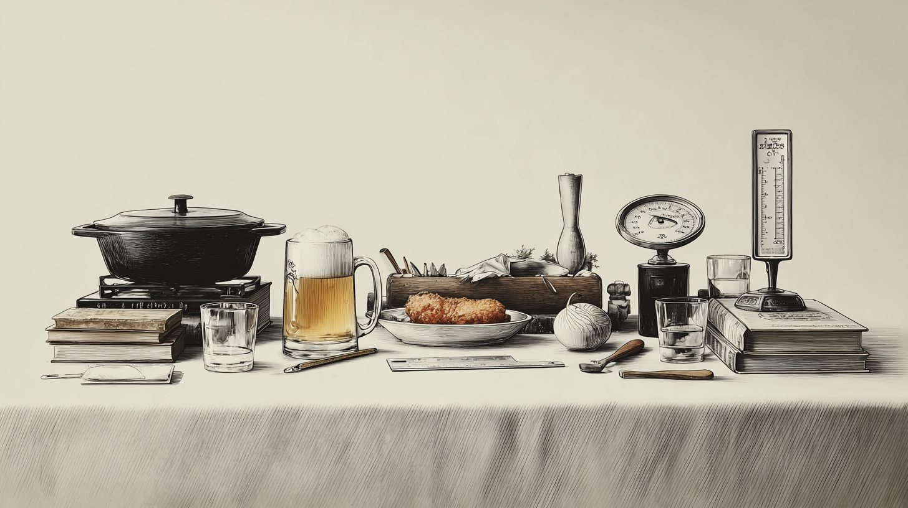
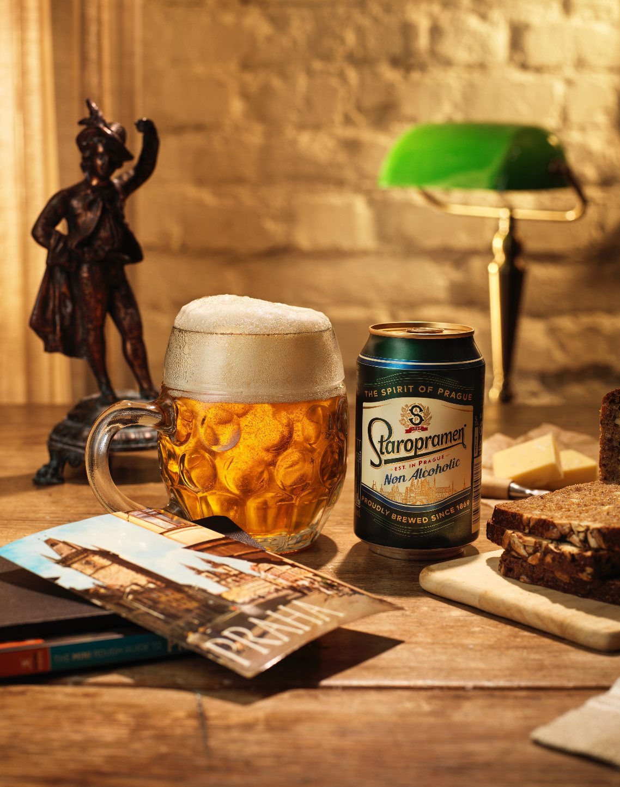

STAROPRAMEN

The brief
Develop a creative brand activation for Staropramen, built on its Czech heritage, product identity and cultural associations.
We explored three territories: the Olympics, Prague’s hidden gems, and Czech food culture through schnitzel. Each could work across ATL/BTL, product-led initiatives and PR.
Visual research and moodboarding
We built a moodboard for each territory to explore visual language, atmosphere and storytelling before execution. They aligned the team on the creative vision and the elements that would bring the activation to life.


Concept development and sketching
Next we sketched how the activation could take shape, testing composition, imagery and how the message could land at a glance.
The aim was one strong visual idea, clearly connected to Staropramen.


Art direction and campaign execution
The process ended in a finished advertising concept and a series of campaign visuals for different formats, including posters.
The imagery carries the idea on its own, with minimal copy.


Final outcome
I took the brief from exploration to a tangible advertising direction.
For me, the strength of the result is the imagery itself: a clear creative direction and careful art direction communicate the concept with minimal explanation.